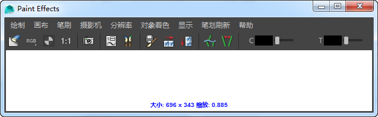

若要进行 2D 绘制，可使用“Paint Effects”画布。“Paint Effects”画布只是作为摄影机正交法线的一个平面。在画布上绘制笔划时，“Paint Effects”将应用绘制并丢弃基本笔划和附加笔刷，这意味着您无法对其进行编辑。
显示“Paint Effects”画布
- 在视图菜单栏上，选择“面板 > 面板 > Paint Effects”(Panels > Panel > Paint Effects)打开“Paint Effects”面板。将自动选择“Paint Effects 工具”(Paint Effects Tool)。
提示： 通过选择，可将“Paint Effects”面板打开为单独的窗口。
- 选择“绘制 > 绘制画布”(Paint > Paint Canvas)。此时面板将从透视场景视图更改为空白画布，且“画布”(Canvas)菜单和工具栏变得可用。
